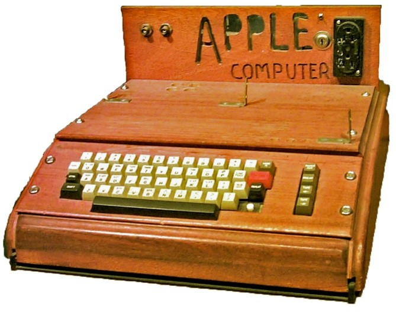
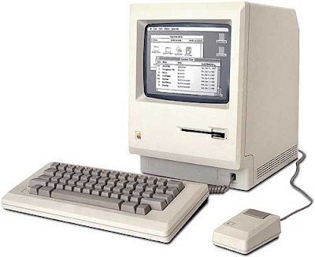
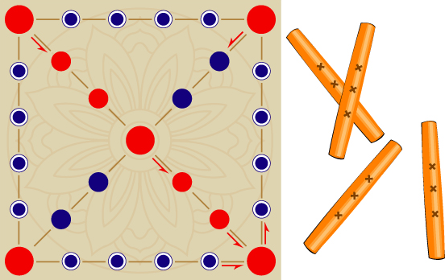
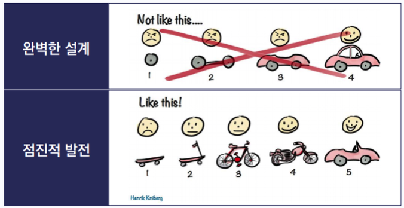

컴퓨터와 자바의 세계
자바로 컴퓨터와 대화하는 방법 이해하기
1. Computer
컴퓨터 이해하기
에니악(ENIAC：Electronic Numerical Integrater And Computer), 1946
30t

APPLE I, 1976
APPLE Ⅱ, 1977

APPLE MACINTOSH, 1984
iPhone, 2007
컴퓨터의 5가지 특성
- 정확성 (Accuracy): 주어진 명령을 단 하나의 오차 없이 정확하게 수행합니다.
- 신속성 (Speed): 방대한 양의 데이터를 사람이 상상할 수 없는 속도로 빠르게 처리합니다.
- 대용량성 (Large Memory): 많은 양의 정보를 저장하고, 필요할 때 언제든 꺼내 쓸 수 있습니다.
- 자동성 (Automation): 한 번 프로그래밍된 작업을 사람의 개입 없이 스스로 반복 수행합니다.
- 융통성 (flexibility): 없습니다.
알잘딱깔센
ERROR
2. Java
왜 자바인가?
48 65 6c 6c 6f 2c 20 57 6f 72 6c 64 21 0a
-
Hello, World!
Hello, World!
Hello, World!
48 65 6c 6c 6f 2c 20 57 6f 72 6c 64 21 0a
- 1995년 제임스 고슬링(James Gosling) 외 선 마이크로시스템즈 발표
- 오크(Oak) 나무에서 시작하여 인도네시아 커피 이름에서 따옴
- WORA (Write Once, Run Anywhere)
- JVM(Java Virtual Machine)을 통한 플랫폼 독립성
- 정적 타이핑 (컴파일 시 타입 체크)
- 컴파일(Bytecode) + JIT 컴파일러
- 강력한 객체 지향(OOP) 언어
- 가비지 컬렉션(GC)을 통한 메모리 자동 관리

절차 지향
객체 지향
언어 인기도 순위 (TIOBE Index)
자바(Java)의 장점
플랫폼 독립성
"Write Once, Run Anywhere" - JVM만 있으면 어떤 OS에서도 동일 실행
강력한 안정성
정적 타이핑과 GC를 통해 대규모 시스템에서도 안정적으로 작동
멀티 스레드
여러 작업을 동시에 처리하여 고성능 서버 및 앱 개발에 최적화
거대한 생태계
Spring 등 방대한 라이브러리와 전 세계 수많은 개발자 커뮤니티
자바로 할 수 있는 일
| 분야 | 주요 기술 및 예시 |
|---|---|
| 웹 서버 및 기업용 시스템 | Spring, Spring Boot |
| 안드로이드 앱 개발 | Android SDK |
| 게임 개발 | LWJGL, libGDX |
| 데스크탑 응용프로그램 | JavaFX, Swing (Windows, Mac, Linux) |
| 빅데이터 및 대용량 처리 | Apache Hadoop, Spark, Kafka |
자바의 한계 및 고려사항
-
극도의 저수준 제어:
JVM의 메모리 관리(GC) 때문에 하드웨어 직접 제어나 마이크로초 단위의 실시간성이 요구되는 임베디드 핵심 영역은 여전히 C/C++이 유리
-
높은 러닝 커브와 코드 복잡도:
파이썬에 비해 문법이 엄격하고 설정이 복잡할 수 있어, 간단한 스크립트나 프로토타입 제작에는 생산성이 떨어질 수 있음

간단한 것이라도 당장 탈 수 있는 것!